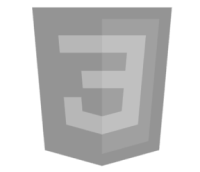
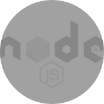

HTML
HTML (HyperText Markup Language) is the backbone of web development. I have a deep understanding of HTML, including semantic elements, accessibility best practices, and responsive design. I use HTML to structure web pages effectively, ensuring they are clean, organized, and easy to maintain.

CSS
CSS (Cascading Style Sheets) allows me to design visually appealing and responsive websites. I am skilled in using advanced CSS techniques such as Flexbox, Grid Layout, and animations. I ensure that my designs are consistent across different devices and browsers.
JavaScript
JavaScript is my go-to language for adding interactivity to websites. I have experience with DOM manipulation, event handling, ES6+ syntax, and building dynamic web applications. My expertise also extends to using JavaScript frameworks like React for creating scalable and efficient front-end applications.

Node.js
Node.js enables me to build efficient and scalable server-side applications. I am proficient in setting up RESTful APIs, managing databases, and integrating back-end services. I focus on creating robust and secure applications tailored to client needs.

React
React is my favorite framework for building user interfaces. I have extensive experience in creating reusable components, managing state with hooks, and optimizing performance. I strive to build web applications that provide an exceptional user experience.